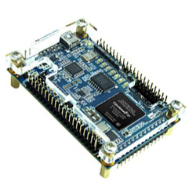
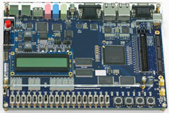
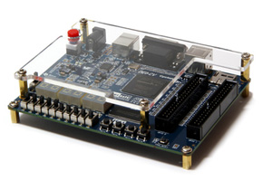

Menu File:
Se aparecer a tela informativa:
Definir:
O diretório do projeto;
O nome do projeto;
Qual é o “Top-Level Design” (o main da linguagem C).
Project Type:
Add Files:
Family, Device & Board Settings:
Cyclone IV E:
EP4CE22F17C6 (a FPGA da placa DE0-Nano);
EP4CE115F29C7 (a FPGA da placa DE2-115).
Cyclone V:
EDA Tool Settings:
Summary:
|  |  |  |
|---|---|---|
| DE0 Nano | DE2 115 | DE0 CV |